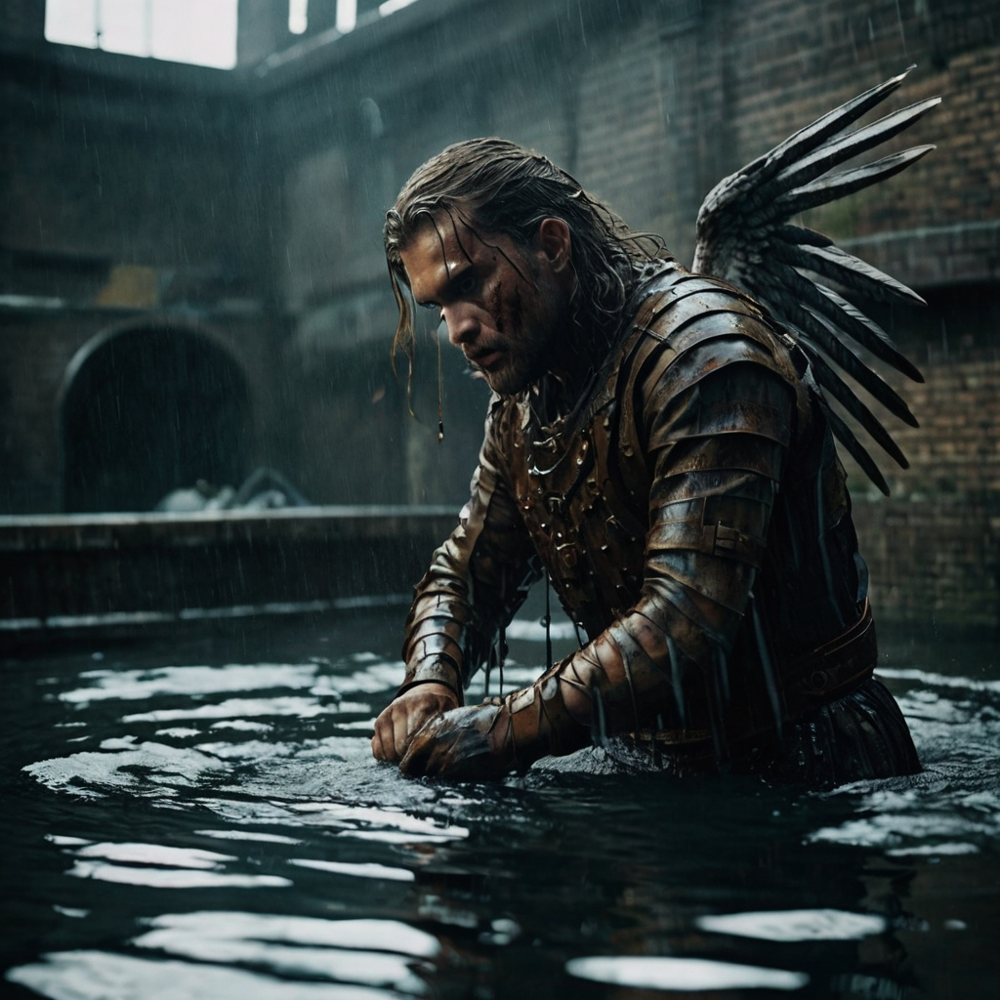
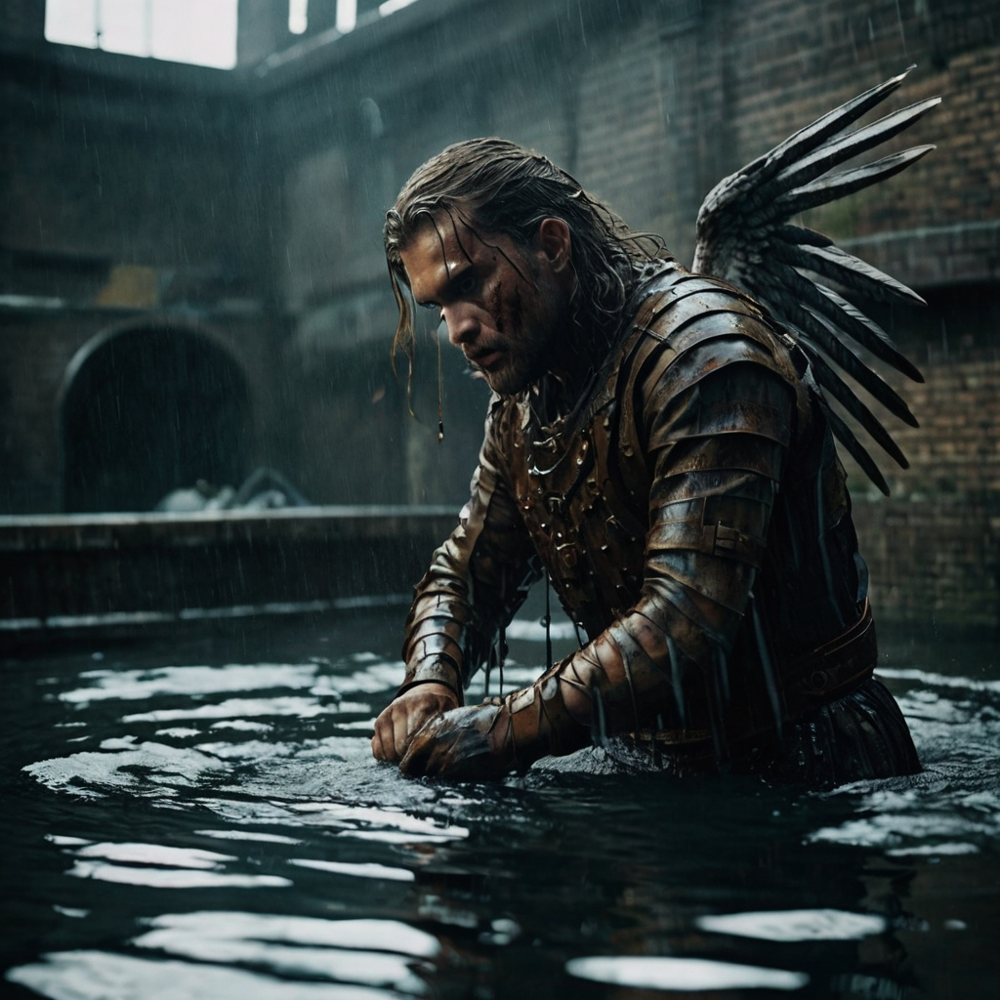

Versus
Dans cet article, nous allons comparer trois générateurs d'IA : Bing, Leonardo et ChatGPT, en utilisant le même prompt.
Le prompt que l'on utilisera est le suivant : 'This is cinema: A man with a sword faces a giant skein in a sewer flooded with dirty water. Oh my god, what's that??? A phoenix is coming; he's beautiful, he's the sign of hope.' Nous allons voir comment chacun de ces générateurs interprète cette scène et quelles réponses ils produisent. Restez avec nous pour découvrir les différences !
Voici les quatre images générées par Bing.


Voici les quatre images générées par Leonardo.AI.
 


Voici l'image générée par ChatGPT.

Analyse des Résultats
En utilisant un seul prompt, nous avons observé des différences marquées entre les générateurs d'images Bing, Leonardo.ai et ChatGPT :
- Production d'Images : À partir du même prompt, Bing et Leonardo.ai ont chacun généré quatre images, tandis que ChatGPT n'en a produit qu'une seule.
- Qualité d'Image : Leonardo.ai se distingue par la qualité réaliste de ses images, alors que les résultats de Bing laissent à désirer.
- Respect du Prompt : ChatGPT s'est avéré être le plus fidèle au prompt initial, tandis que Leonardo.ai, en raison d'une faute de frappe, a été le moins précis.
- Mise en Scène : Il existe une similitude notable dans la mise en scène et le cadre des images générées par les trois plateformes.
- Esthétique : En termes de beauté des images, l'ordre est le suivant : Leonardo.ai > ChatGPT > Bing.
- Compréhension du Prompt : ChatGPT montre une meilleure compréhension des instructions par rapport à Bing et Leonardo.ai.
Pour nos besoins en matière d'images, nous privilégierons donc Leonardo.ai et ChatGPT. Cependant, il est important de noter que ChatGPT est limité à trois prompts par jour, ce qui restreint considérablement ses capacités de génération.